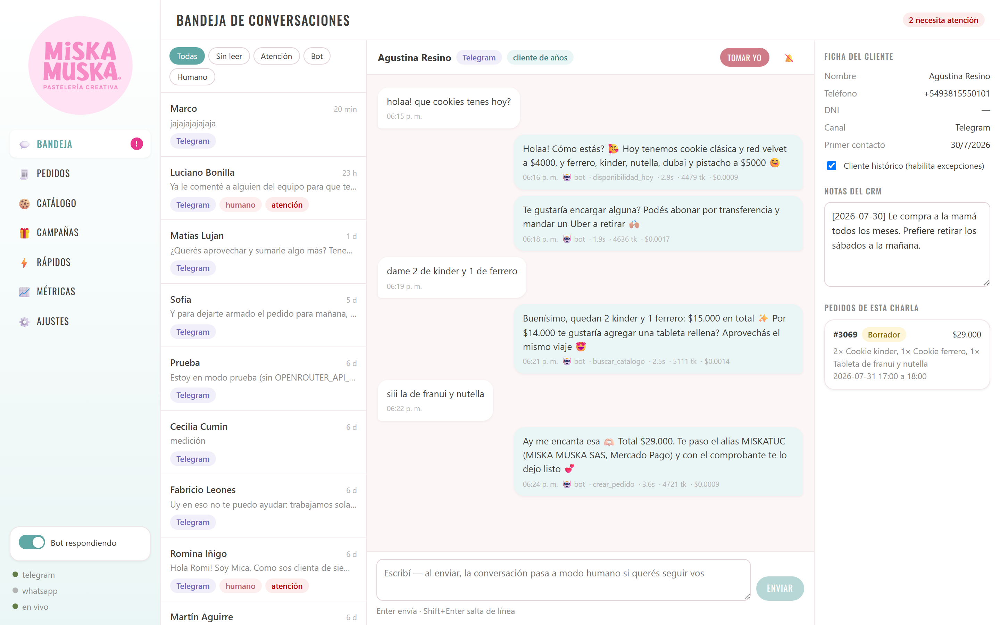
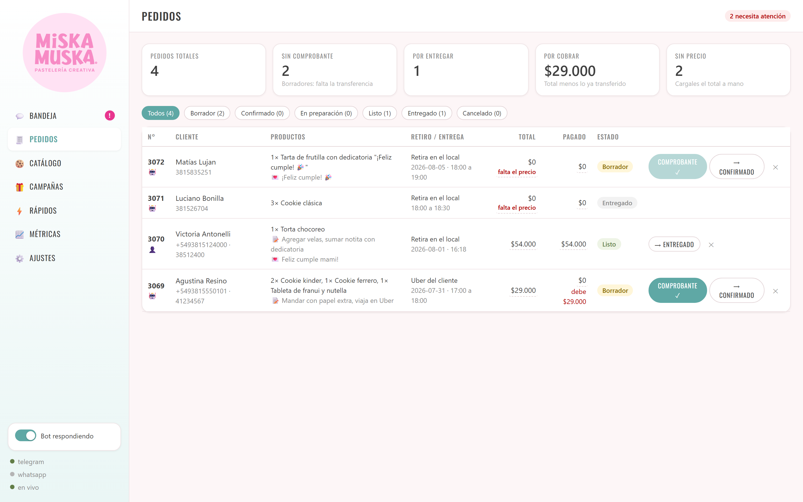
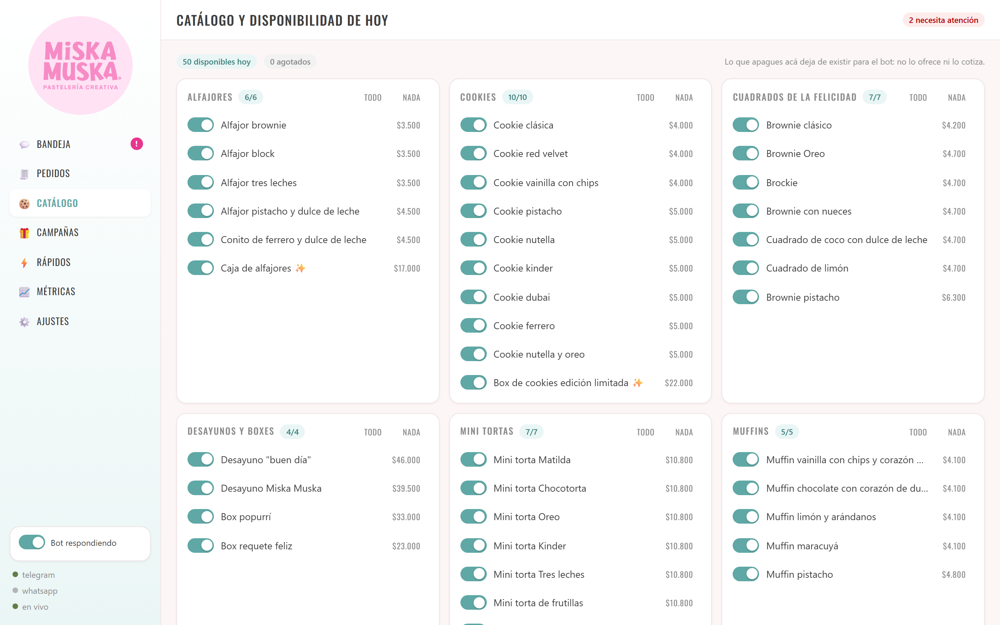
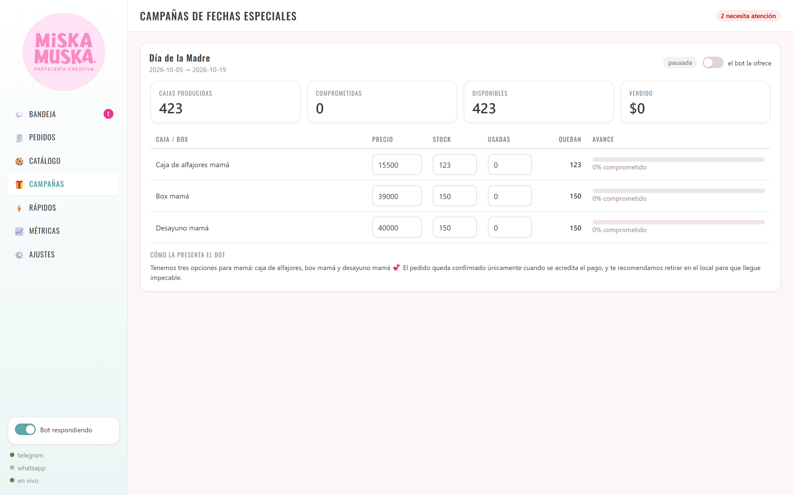
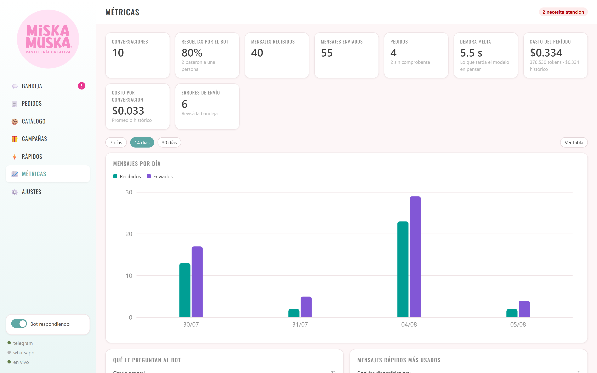
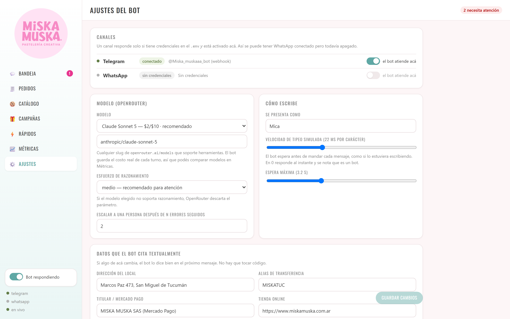
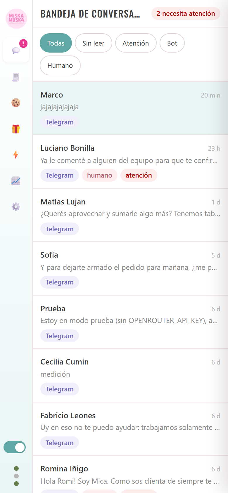
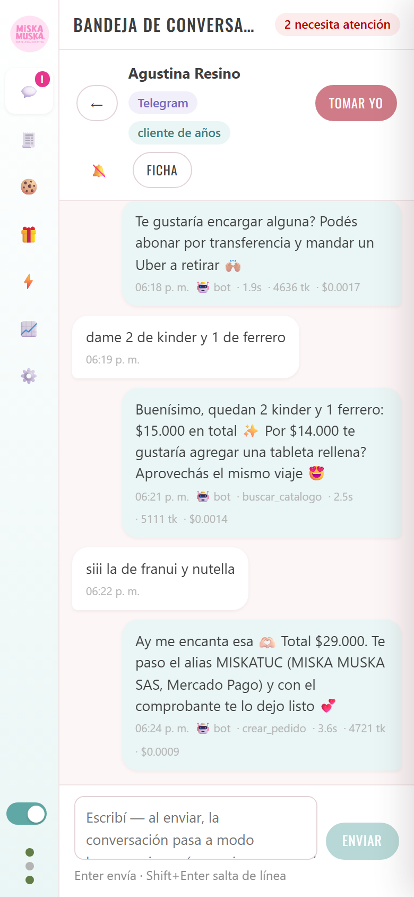
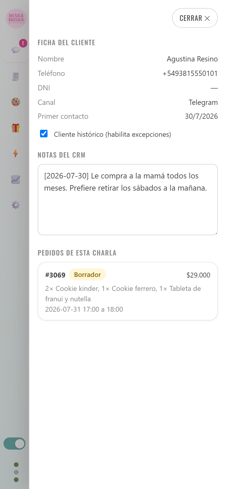

Versión de prueba · 5 de agosto de 2026
Canal activo: Telegram · Panel publicado y funcionando
Son dos piezas que trabajan juntas, y conviene tenerlas separadas en la cabeza desde el principio:
El bot no reemplaza a nadie: se ocupa de lo repetitivo —qué hay hoy, cuánto sale, cómo se paga, tomar los datos— y levanta la mano cuando aparece algo que necesita criterio. Todo lo que hace queda registrado y es reversible desde el panel.
Hay un interruptor general abajo a la izquierda del panel. Si lo apagás, el bot deja de responder al instante y las conversaciones quedan esperando a una persona. No hace falta llamar a nadie ni esperar nada.
| 1. Escribe el cliente | Le manda un mensaje al bot por Telegram. |
| 2. Contesta Mica | Consulta el catálogo cargado y responde con precios y disponibilidad de hoy. |
| 3. Se arma el pedido | Cuando ya tiene nombre, teléfono, productos y fecha, lo carga como borrador y pide el comprobante de la transferencia. |
| 4. Confirmás vos | Mirás el comprobante y confirmás el pedido desde el panel. Esta parte es humana a propósito. |
| 5. Seguimiento | El pedido avanza: en preparación, listo, entregado. |
La mejor manera de probarlo es hablarle como te hablaría un cliente. No hace falta que uses palabras especiales: escribile normal.
@Miska_muskaaa_bot/start)| Probá con esto | Qué tendría que pasar |
|---|---|
| "¿qué tenés hoy?" | Te lista lo que está marcado como disponible, con los precios que tenga cargados. |
| "quiero 3 cookies de kinder para el sábado" | Te pide los datos que faltan (nombre, teléfono, horario) antes de cargar nada. |
| "¿me lo mandás a domicilio?" (con una torta) | Te explica que las tortas no van con cadete y te ofrece las alternativas. |
| "¿puedo pagar la mitad ahora?" | No lo decide solo: deriva a una persona y te avisa en el panel. |
| "quiero hablar con alguien" | Deriva enseguida y la conversación queda marcada como atención. |
| "¿tenés algo sin TACC?" | Si no lo sabe, lo dice. No inventa. |
El sistema viene con catálogo, conversaciones y pedidos de ejemplo, para que puedas recorrerlo sin arrancar de una pantalla vacía. Todo lo que cargues probando se puede borrar después desde el panel.
| Dirección | https://miska-muska.vercel.app |
| Clave de acceso | Te la mandamos por separado, no va escrita en este documento. |
| Dónde funciona | Cualquier navegador, en la computadora y en el celular. |
La primera vez te va a pedir la clave. Se guarda en ese navegador, así que la pedís una sola vez por dispositivo. Si entrás desde el celular te la va a pedir de nuevo, porque es otro navegador.
Con ella se ve todo: conversaciones, datos de clientes, pedidos, y se puede apagar el bot. No la compartas por grupos ni la pegues en capturas de pantalla.
| Bandeja | Las conversaciones, en vivo. Es la pantalla donde vas a estar casi siempre. |
| Pedidos | Todos los pedidos, su estado y cuánto se pagó. |
| Catálogo | Los productos y qué hay disponible hoy. |
| Campañas | Fechas especiales con stock limitado (Día de la Madre, Navidad). |
| Rápidos | Respuestas armadas que el bot usa tal cual: la dirección, cómo se paga, el horario. |
| Métricas | Cuántos mensajes, cuántos pedidos y cuánto costó en dólares. |
| Ajustes | El nombre del bot, el horario, el alias de transferencia y los datos que cita. |

Todo lo que ves acá se actualiza solo, sin recargar la página. Cuando entra un mensaje, aparece.
Debajo de cada mensaje del bot dice cuánto tardó, cuántas palabras consumió y cuánto costó en dólares. Es información nuestra para ajustar; podés ignorarla tranquilamente.

Un pedido pasa por estos estados, y avanza con el botón de la derecha:
| Borrador | El bot juntó los datos pero todavía no llegó el comprobante. |
| Confirmado | Viste la transferencia y lo diste por bueno. |
| En preparación | Se está haciendo. |
| Listo | Esperando que lo retiren o salga. |
| Entregado | Cerrado. |
El botón "Comprobante ✓" hace las dos cosas de una: marca el pedido como pagado por el total y lo pasa a confirmado. Es el que más vas a apretar.
Los importes se pueden corregir. Tocá el número de "Total" o de "Pagado" y se vuelve un campo. Sirve para dos cosas: arreglar un pedido al que le falta el precio, y anotar una seña cuando el cliente paga una parte.
Cuando un pedido queda sin total, el panel lo marca en rojo y lo cuenta arriba, en Sin precio, para que no se escape. En la captura se ven dos, que quedaron así de las pruebas. Se arreglan tocando el total y escribiendo el número.

Esta es la pantalla del día a día. Lo que apagues acá, el bot deja de ofrecerlo inmediatamente; si un cliente lo pide, avisa que hoy no hay y ofrece algo parecido.

Una campaña es una fecha con stock contado: cargás cuántas unidades hay y el bot las va reservando a medida que toma pedidos. Cuando se acaban, deja de ofrecerlas.

Sirve para dos preguntas concretas: ¿cuánto trabajo se está ahorrando? y ¿cuánto cuesta? El gasto está en dólares y es el número real que cobra el proveedor de la inteligencia artificial, no una estimación.

La dirección, el alias de transferencia y el titular de la cuenta los cita el bot tal cual están escritos acá. Si hay un error de tipeo, se lo va a pasar a cada cliente. Es lo primero que conviene verificar.
También se ajustan el horario del local —fuera de hora el bot avisa que puede haber demora—, el nombre con el que se presenta, y cuántos errores seguidos tolera antes de derivar a una persona.
El panel funciona igual en el teléfono. Como no entran tres columnas, se muestra una pantalla por vez: la lista, y al tocar una conversación, el chat.



Se puede contestar, tomar una conversación, cargar precios y confirmar pedidos desde el teléfono, igual que en la computadora.
El bot no improvisa con los datos: cada vez que necesita saber algo, lo consulta. Estas son las cosas que puede hacer por su cuenta:
| Buscar en el catálogo | Por nombre o categoría, con los precios cargados. |
| Ver qué hay hoy | Lo que está marcado como disponible en ese momento. |
| Usar respuestas armadas | Dirección, formas de pago, horarios: los cita tal cual, sin reescribirlos. |
| Cargar un pedido | Solo cuando ya tiene nombre, teléfono, productos, precio y fecha. |
| Consultar un pedido | Por número, para responder "¿cómo viene lo mío?". |
| Anotar en la ficha | Guarda lo que conviene recordar de ese cliente. |
| Derivar a una persona | Y explica por qué. |
El bot deriva solo —y marca la conversación como atención— en estos casos:
No confirma pagos, no da descuentos, no promete fechas que no puede cumplir y no inventa productos que no están en el catálogo. Cuando algo de eso aparece, deriva.
| Pieza | Estado | Detalle |
|---|---|---|
| Bot en Telegram | funcionando | Atendiendo, con el catálogo cargado. |
| Panel de control | funcionando | Publicado, se actualiza en vivo, anda en computadora y celular. |
| Catálogo | cargado | 50 productos en 9 categorías. Conviene repasar precios y disponibilidad antes de abrirlo al público: es lo que el bot va a citar. |
| Pedidos y seguimiento | funcionando | Con estados, cobros y señas. |
| pendiente | El bot ya está preparado para atender ahí. Falta la verificación de negocio de Meta y la aprobación de las plantillas, que tardan semanas y no dependen de nosotros. |
Toma el pedido y pide el comprobante, pero la confirmación del pago siempre la hace una persona. Es a propósito: es la parte donde un error cuesta plata.
Si alguien manda doscientos mensajes seguidos, el bot los va a contestar. El gasto se ve en Métricas y el freno es el interruptor del panel, pero no se corta solo. Si esto llega a ser un problema real, se agrega un límite.
Hay un solo bot de Telegram andando, pensado para que lo prueben entre pocas personas. Antes de darlo a conocer a los clientes conviene repasar juntos el catálogo, los datos de Ajustes y lo que haya salido de estas pruebas.
Lo más útil que nos podés pasar no es "anda bien" o "anda mal", sino qué le escribiste y qué te contestó. Con una captura de la conversación alcanza.
Después de un rato usándolo: ¿lo dejarías atendiendo solo? Si la respuesta es "no, porque…", ese "porque" es exactamente lo que necesitamos escuchar.